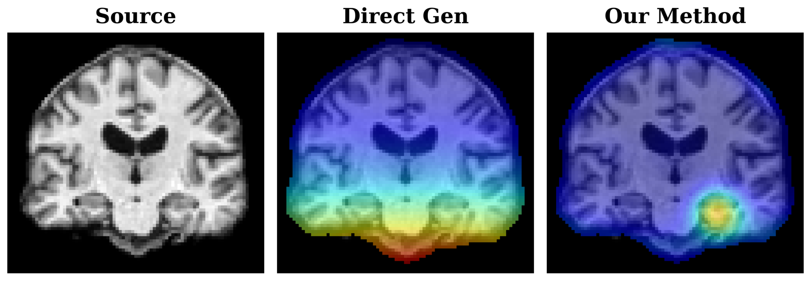
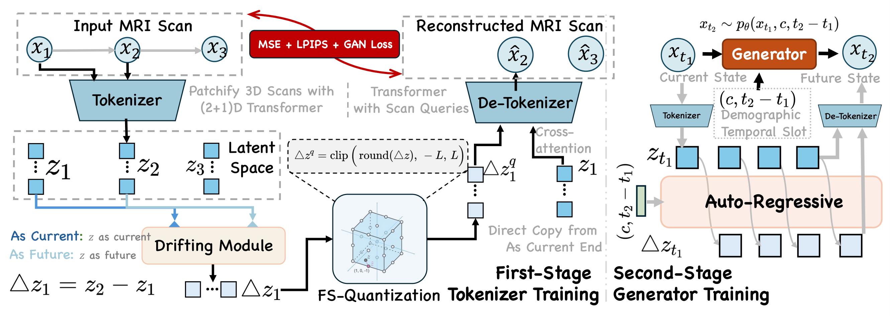
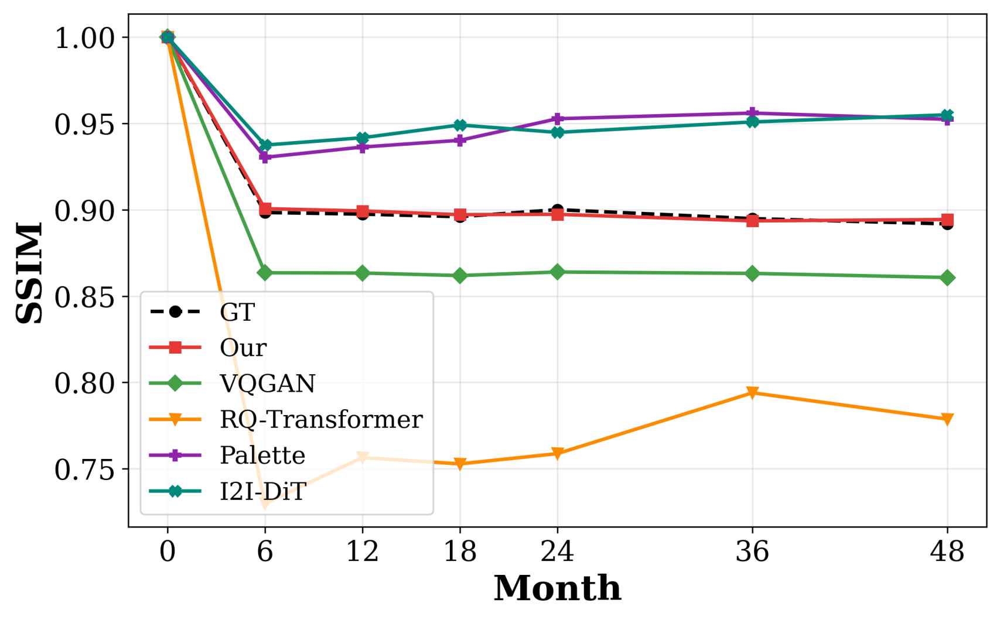
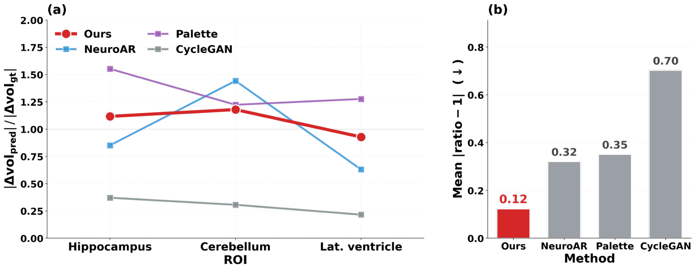

Interactive Forecasts
BaselinePre (current)
ForecastPredicted future
Predicted ChangeForecast − Pre
Forecasting the future anatomy of slow-evolving neurodegenerative diseases could enable earlier, more targeted intervention and improve clinical trial design, but it remains challenging because true progression signals are subtle in longitudinal MRI. In this low-signal regime, transferring modern generative sequence models directly is unreliable: training is dominated by stable baseline anatomy and confounded by dense, sample-specific nuisance variation. We first provide a theoretical analysis that explains these failures through two modes. Identity collapse occurs when optimization is driven toward reproducing the current anatomy, which prevents the model from learning faint temporal change. The continuous interpolation trap arises when standard smooth networks cannot separate localized biological drift from pervasive noise, which leads to spurious changes that diffuse across the volume. To address both issues, we propose Latent Drift, a progressive generative framework that learns change in a compressed semantic representation rather than synthesizing full-resolution anatomy. This design removes pixel-level identity from the prediction target and concentrates model capacity on progression-relevant dynamics. We further apply Finite Scalar Quantization to the learned change representation, which suppresses small, high-frequency nuisance fluctuations while preserving consistent structural drift. Experiments on longitudinal 3D brain MRI show that Latent Drift improves patient-specific neuro-forecasting over diffusion and autoregressive transformer baselines across generative fidelity and clinically relevant evaluation metrics.
Neurodegeneration unfolds over years: across a typical one-year interval, disease-related morphological change may be under 1% of the total volumetric variance in a 3D MRI scan. As a result, the current and future scans are statistically almost identical, so the temporal progression signal is far weaker than in natural video. Decomposing the future latent state as zfut = zcur + δpathology + ηnuisance exposes two structural failure modes for standard generative models.
Because the stationary background overwhelms the biological signal (∥zcur∥ ≫ ∥δ∥), a model optimized to synthesize the absolute future state is pushed toward an approximate identity mapping — it reproduces static neuroanatomy instead of learning the faint temporal drift.
Shifting the target to the temporal residual exposes a second pathology: any Lipschitz-continuous predictor trained on Δz = δ + η must interpolate the dense nuisance noise, smearing spurious variance across the volume and destroying the sparse support of the true drift.

Gradient analysis. When predicting the absolute future state, training gradients spread across the whole volume (skull, unaffected hemispheres), confirming identity collapse. When the target is the temporal difference Δz, gradients localize around regions of true change such as the hippocampus.
We introduce a two-stage framework that separates the semantic biological trajectory from the stationary background and the dense imaging noise. A Latent Drift Tokenizer compresses both scans into a semantic latent space and models the continuous drift Δzraw = zfut − zcur, then passes it through a Finite Scalar Quantization (FSQ) bottleneck. This residual objective forces the model to allocate its capacity to structural change — escaping identity collapse. A Decoder-Transformer then autoregressively forecasts the discrete drift tokens, conditioned on the patient's baseline anatomy and clinical metadata.
Crucially, FSQ acts as a topological dead-zone filter: any noise fluctuation with |Δzraw| < s/2 is mapped exactly to zero, while consistent structural drift crosses the quantization threshold and is preserved. Because rounding is discontinuous, the operator is non-Lipschitz — precisely the property needed to break the continuous interpolation trap.

Framework overview. A residual tokenization stage isolates and discretizes the temporal difference between longitudinal scans via FSQ, and a Decoder-Transformer forecasts the discrete progression signal conditioned on the baseline state and clinical metadata.
On longitudinal 3D brain MRI from ADNI and AIBL (3,981 current-future pairs), Latent Drift achieves the best structural agreement (Diff-SSIM 0.8204, NCC 0.9880) and the best downstream clinical utility (Accuracy 88.33, F1 87.51), outperforming diffusion and autoregressive transformer baselines. Wilcoxon signed-rank tests confirm the gains are statistically significant (p < 0.05).

Personalized longitudinal trajectory. Over a 48-month horizon, Latent Drift tracks the ground-truth rate of anatomical decline, while near-identity baselines (Palette, I2I-DiT) barely change and continuous/AR baselines (VQGAN, RQ-Transformer) drift and fluctuate.

Consistency across regions. On three ROIs spanning a ~23× range of dynamic change (hippocampus, cerebellum, ventricle), our method stays within [0.93, 1.18] of the ideal recovered-to-ideal ratio — 2.6–5.8× closer than baselines.
@inproceedings{feng2026latentdrift,
title = {Progression as Latent Drift: Generative Forecasting of Slow-Evolving Pathologies},
author = {Feng, Yuxiang and Wang, Juncheng and Xu, Chao and Hou, Wenlong and
Wang, Huihan and Qian, Yijie and Liu, Yang and Sun, Baigui and
Liu, Yong and Wang, Shujun},
booktitle = {European Conference on Computer Vision (ECCV)},
year = {2026}
}